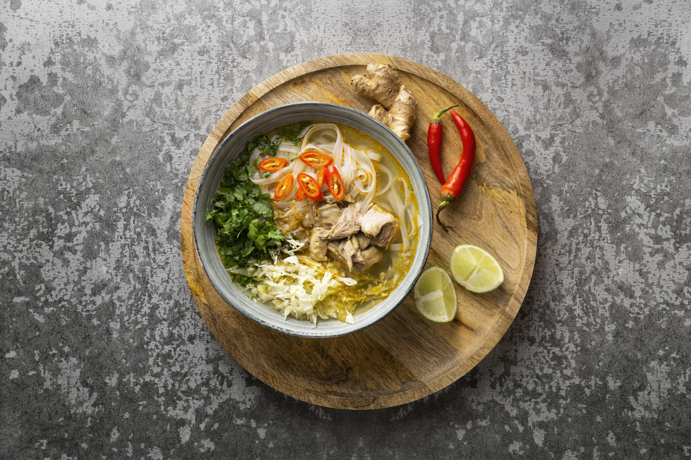

Menu Makanan
:strip_icc():format(webp)/kly-media-production/medias/3245094/original/043061400_1600750232-shutterstock_1786027046.jpg "Rendang")
Rawon
Cara Membuat
- Rebus daging dan dengkul sapi hingga setengah lunak.
- Potong daging sesuai selera. Sisihkan.
- Masukkan Royco Kaldu Sapi dan garam ke dalam air rebusan daging.
- Tumis bumbu halus, lengkuas, daun jeruk, dan serai hingga harum dan matang.
- Masukkan potongan daging ke dalam tumisan.
- Masak hingga bumbu meresap.
- Masukkan tumisan daging ke dalam kuah kaldu.
- Masak dengan api kecil hingga daging empuk.
- Sajikan hangat beserta pelengkap.
Rendang
Cara Membuat
- Panaskan minyak, tumis bumbu halus bersama daun jeruk, serai, daun salam, daun kunyit, dan pala hingga harum.
- Masukkan daging, aduk rata. Tuang air, masak hingga mendidih.
- Tambahkan santan, Royco Kaldu Sapi, dan garam.
- Masak sambil diaduk hingga airnya terserap habis dan minyaknya keluar.
- Angkat.
- Sajikan.
Mie Khocok
Cara Membuat
- Kuah: Giling semua bahan bumbu hingga halus benar.
- Panaskan 4 sdm minyak dalam wajan.
- Tumis bumbu halus bersama daun salam dan lengkuas hingga harum dan matang.
- Masukkan bumbu ke dalam panci, tambahkan kaldu.
- Masak dengan api sedang hingga mendidih.
- Masukkan bakso, tetelan, kikil sapi dan daun bawang.
- Siram mie kuning dengan air panas lalu tiriskan.
- Seduh tauge sebentar dengan air mendidih dan tiriskan.
- Penyajian: Susum mie kuning, tauge, dan siram kaldu berikut bakso, kikil dan tetelan.
- Sajikan panas dengan Pelengkapnya.

Soto Medan
Cara Membuat
- Lumuri ayam dengan perasan air jeruk nipis dan garam.
- Diamkan selama beberapa menit lalu bilas hingga bersih kembali.
- Tumis bumbu halus bersama lengkuas, serai, bunga lawang, kapulaga, daun salam, dan daun jeruk hingga harum.
- Aduk-aduk hingga bumbu matang.
- Masukkan ayam lalu aduk hingga berubah warna.
- Tuang santan encer bersama gula dan garam.
- Aduk lalu masak hingga ayam jadi empuk. Angkat ayam kemudia tiriskan dan sisihkan.
- Tuang santan kental.
- Aduk-aduk hingga mendidih.
- Koreksi rasanya. Matikan api.

Papeda
Cara Membuat
- Dalam panci, didihkan 3 gelas air.
- Sisihkan.
- Dalam panci yang lain, campur tepung sagu, bawang putih, garam, dan 1 gelas air.
- Aduk rata.
- Ambil air yang telah mendidih lalu tuangkan secara perlahan ke dalam campuran tepung sagu.
- Masak campuran tepung sagu dengan api kecil sambil terus diaduk hingga mengental. Angkat.
- Siap Disajikan

Pempek
Cara Membuat
- Masukkan ikan, garam, penyedap rasa dan air es, lalu campurkan hingga merata.
- Tambahkan tepung sedikit demi sedikit, aduk hingga adonan menjadi kalis.
- Bentuk adonan sesuai seleramu.
- Rebus adonan pempek yang telah dibentuk ke air mendidih.
- Jika adonan telah mengapung, itu artinya pempek sudah matang. Tiriskan.
- Kamu bisa langsung menyajikannya atau bisa digoreng dulu.
- Jangan lupa gunakan cuko biar lebih mantap.

Nasi Goreng
Cara Membuat
- Panaskan minyak.
- Tumis bumbu tumbuk kasar sampai harum.
- Sisihkan di pinggir wajan.
- Masukkan telur.
- Aduk sampai berbutir.
- Tambahkan ayam, udang, bakso. Aduk rata.
- Tambahkan nasi putih. Aduk- aduk. Masukkan Bango Kecap Manis, garam, dan gula pasir.
- Aduk sampai matang.
- Masukkan daun bawang. Aduk rata.
- Sajikan bersama telur ceplok dan taburan bawang merah goreng.

Ayam Taliwang
Cara Membuat
- Belah ayam tidak sampai putus.
- Lumuri dengan air jeruk limau dan garam.
- Diamkan selama 30 menit dalam kulkas. Sisihkan.
- Panaskan minyak, tumis bumbu halus hingga harum.
- Masak ayam bersama bumbu hingga terlumuri dengan baik.
- Tambahkan susu dan santan. Aduk hingga merata.
- Panaskan wajan pemanggang, panggang daging ayam sambil diolesi madu, kemudian olesi dengan sisa bumbu ayam taliwang.
- Panggang hingga kecokelatan di kedua sisinya. Angkat.
- Sajikan bersama sambal kecap pedas.